00:01我们来谈谈逻辑回归，这可能是世界上应用最广泛的单一分类算法了。
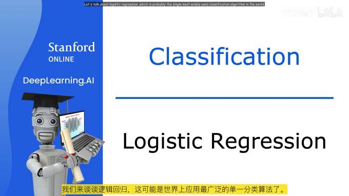
00:12我们继续用判断肿瘤是否为恶性的例子，和之前一样，我们用标签一或是，即正类，来表示恶性肿瘤，用零或否，即负例，来表示良性肿瘤。
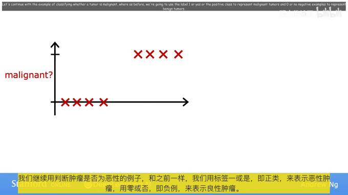
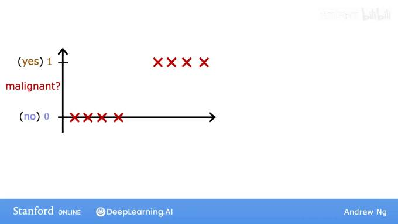
00:30这是数据集的图表，横轴是肿瘤大小，纵轴只取零和一两个值，因为这是个分类问题。
00:42你在上个视频中看到，线性回归对于这个问题不是一个好的算法。
00:48相比之下，逻辑回归最终要做的，是拟合一条看起来像这样的曲线，一条 S 形曲线到这个数据集。
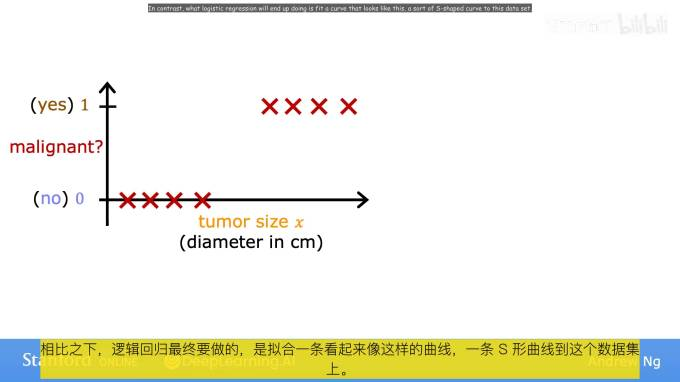
01:01所以在这个例子中，如果一位病患来了，其肿瘤是这个大小，就如我在 x 轴上所示，那么算法将输出零点七，提示这更接近或更可能是恶性而非良性。
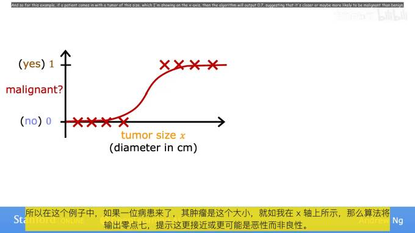
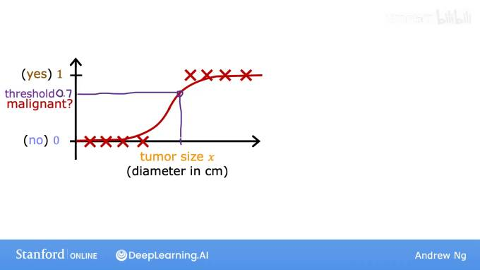
01:20稍后我们会更多解释零点七在这个情境下实际意味着什么。
01:25但输出的标签永远不会是零点七，它只能是零或一。
01:31为了构建逻辑回归算法，有一个我想介绍的重要数学函数，叫做 sigmoid 函数，有时也称为逻辑函数。
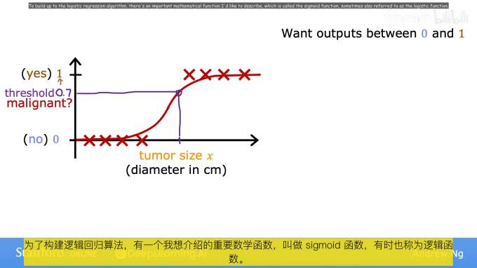
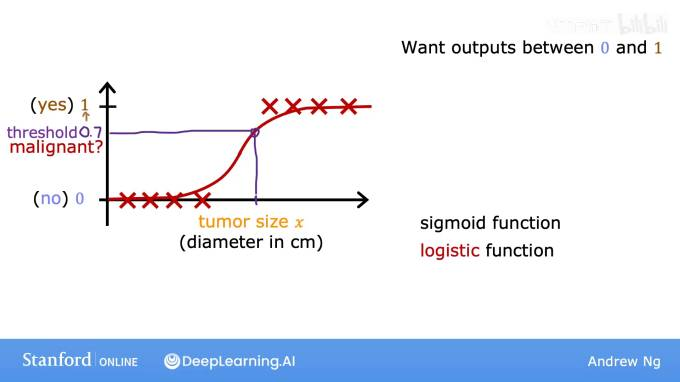
01:46sigmoid 函数看起来像这样。
01:49请注意，左侧和右侧图表的 x 轴是不同的。
01:54在左侧的图中，x 轴上是肿瘤大小，所以全是正数。
02:01而在右侧的图中，这里下方是零，横轴同时取负值和正值。
02:15我在这里展示的只是一个从负三到正三的范围。
02:21因此 sigmoid 函数输出零到一之间的值。
02:25如果我用 g of z 来表示这个函数，那么 g of z 的公式等于一除以一加 e 的负 z 次方，其中 e 是一个数学常数，取值约为二点七。
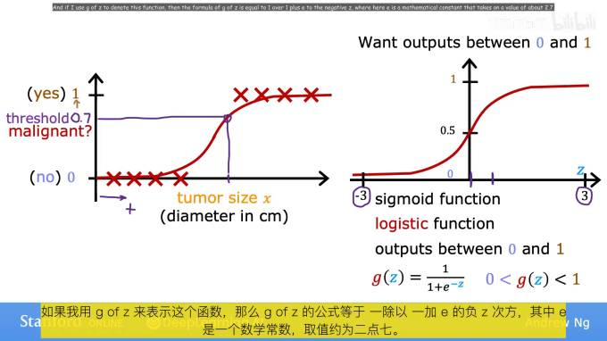
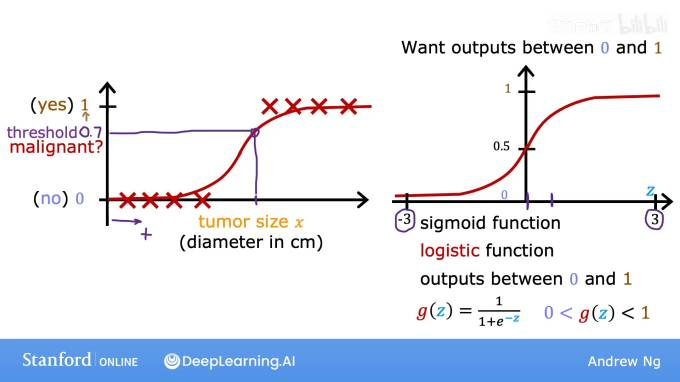
02:43因此 e 的负 z 次方就是这个数学常数的负 z 次幂。
02:49注意，如果 z 非常大，比如一百，e 的负 z 次方就是 e 的负一百次方，这是一个非常非常小的数。
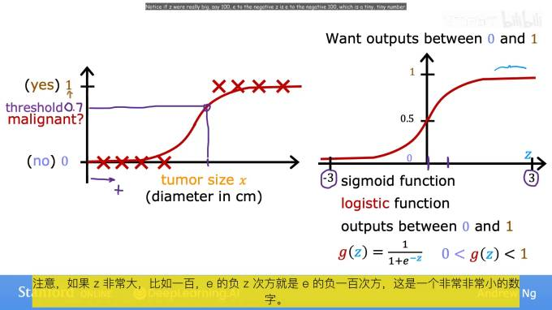
03:01所以这最终变成了，一，一除以一加上一个极其微小的数，因此分母将基本上非常非常接近于一，这就是为什么当 z 很大时，g of z，也就是 z 的 sigmoid 函数，会非常接近于一。
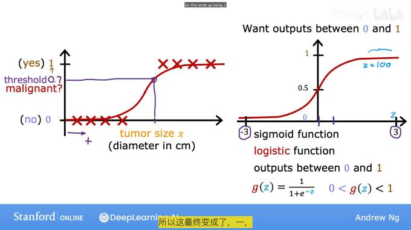
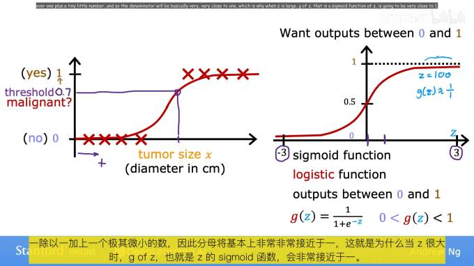
03:23相反地，你也可以自己验证一下，当 z 是一个非常大的负数时，g of z 就变成了一除以一个巨大的数，这就是为什么 g of z 非常接近于零。
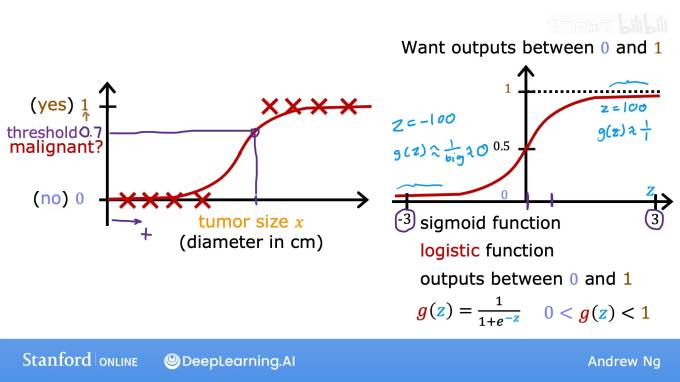
03:40所以这就是 sigmoid 函数拥有这种形状的原因，它开始非常接近于零，然后慢慢建立或增长到值一。
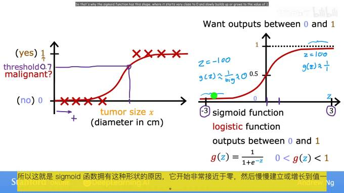
03:51此外，在 sigmoid 函数中，当 z 等于零时，e 的负 z 次方是 e 的负零次方，这等于一。
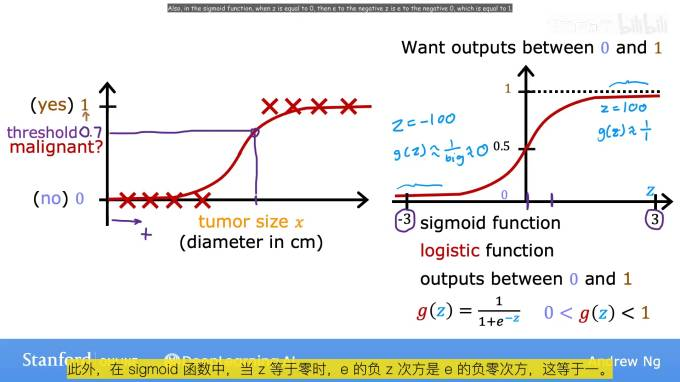
04:02因此 g of z 等于一除以一加一，也就是零点五。
04:10这就是为什么它在纵轴零点五处穿过。
04:16现在，让我们利用它来构建逻辑回归算法。
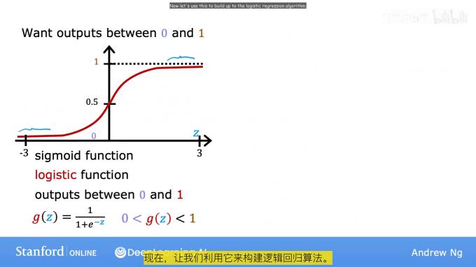
04:23第一步，我希望你记得，P 一条直线函数，就像线性回归函数，可以定义为 w 点乘 x 加 b。
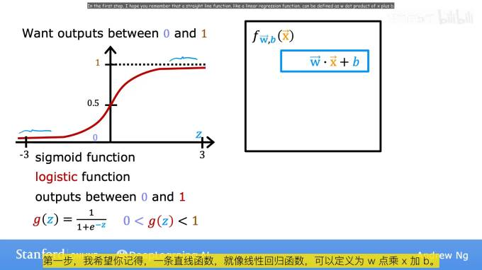
04:36那么让我们把这个值存在一个变量里，我将称它为 z。
04:42这将和你在前一张幻灯片上看到的 z 是一样的，我们稍后就会讲到。
04:50下一步就是将这个 z 的值传递给 sigmoid 函数，也叫做逻辑函数 g。
05:01那么现在 g of z 会输出一个由这个公式计算的值，一除以一加 e 的负 z 次方，这个值会在零到。
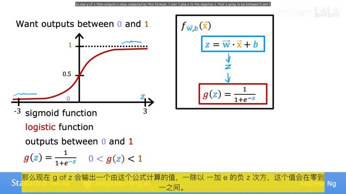
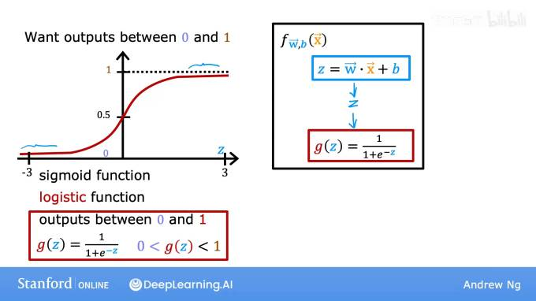
05:14当你把这两个等式放在一起时，它们就给了你逻辑回归模型 f of x，它等于 g of w dot x plus b， 或者等价于 g of z。
05:34也就是等于这里的这个公式。
05:42它所做的是输入一个特征或一组特征 x，并输出一个介于零到一之间的数字。
05:50接下来，我们看看如何解释逻辑回归的输出。
05:57我们回到肿瘤分类的例子。
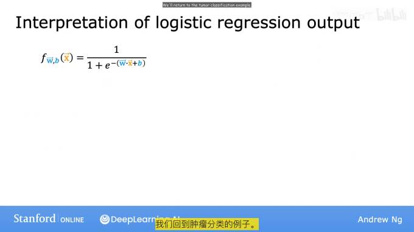
06:01我鼓励你思考逻辑回归输出的方式是，将其视为输出在给定某个输入 x 的条件下，类别或标签等于的概率。
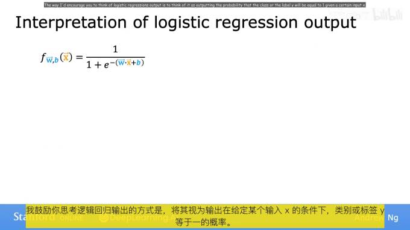
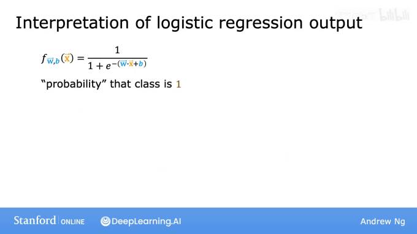
06:18在这个应用中，x 是肿瘤大小，y 要么是零要么是一，如果你有一位病患前来，她的肿瘤是某个特。
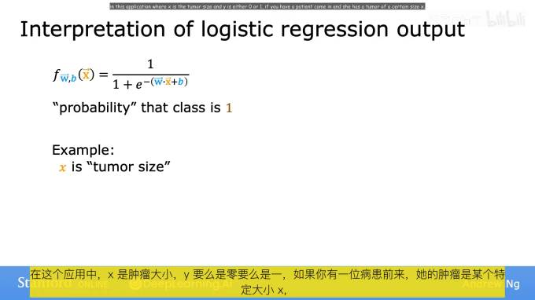
06:30并且基于这个输入 x，模型输出了零点七，那么这意味着模型正在预测，或者模型认为，对于这位病患，真实标签 y 等于一的可能性是百分。
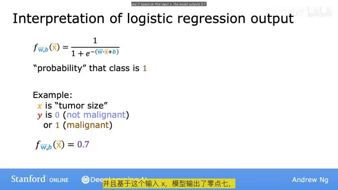
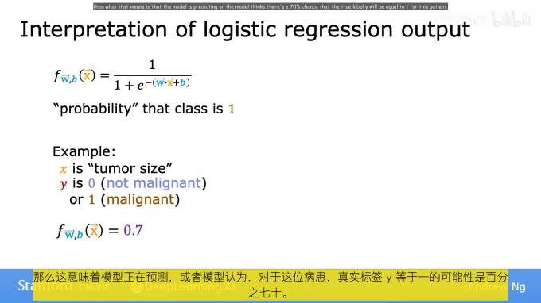
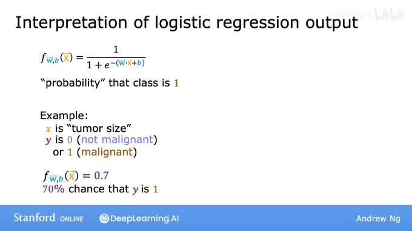
06:47换句话说，模型在告诉我们，它认为这位病患的肿瘤有百分之七十的几率最终会是恶性的。
06:57现在，我问你一个问题。
07:03我们知道 y 必须是零或一。
07:08那么如果有百分之七十的几率是一，它是零的几率是多少呢？
07:15所以必然是零或一之一，因此它是零或一的概率，这两个数字加起来必须等于一，或者说百分之百的几率。
07:27所以这就是为什么，如果是一的几率是零点七或者说百分之七十，那么它是零的几率就一定是零点三或者说百分之三十。
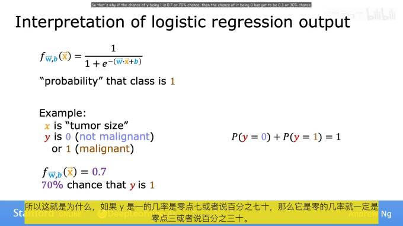
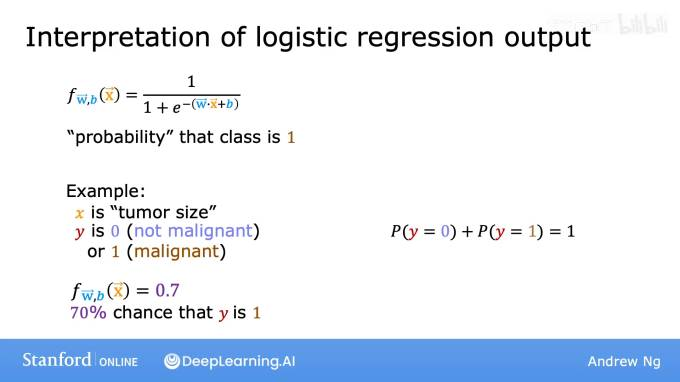
07:40如果某天你读到关于逻辑回归的研究论文或博客文章，有时你会看到这个记号，f ofx 等于给定输入特征 x 和参数 w 及 b 下，y 等于的概率 p。
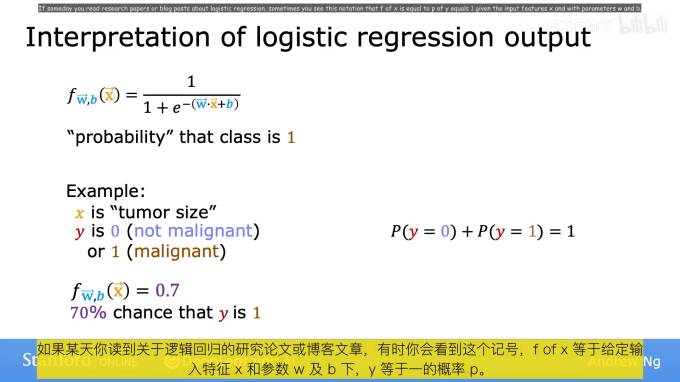
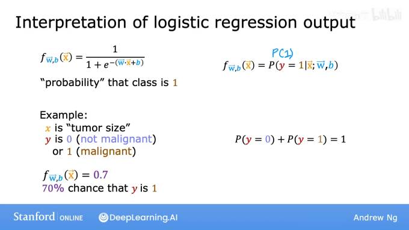
07:59这里分号用来表示的是，w 和 b 是影响这个计算的参数，计算的是给定输入特征 x 下 y 等于一的。
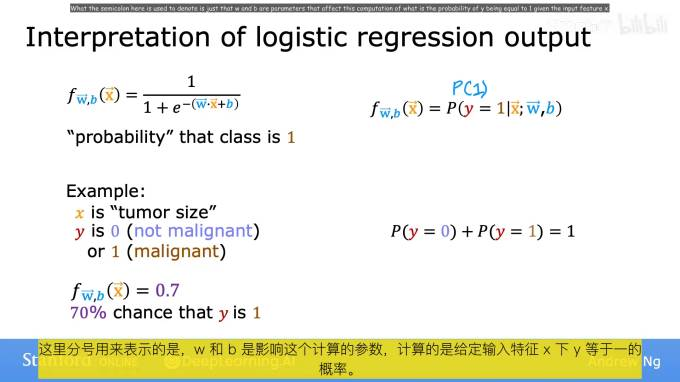
08:13就本课程而言，不必太担心这个竖线和分号意味着什么。
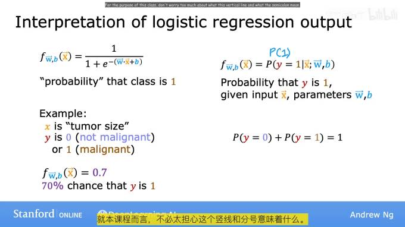
08:19在这门课中，你不需要记住或遵循这些数学符号。
08:24我提到这个，只是因为你可能会在其他地方看到。
08:28在本视频之后的选修实验中，你也会看到 sigmoid 函数是如何用代码实现的。
08:36你可以看到一幅图，它使用了 sigmoid 函数，以便在你前一个选修实验中看到的分类任务上做得更。
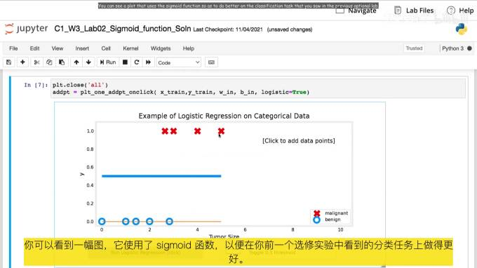
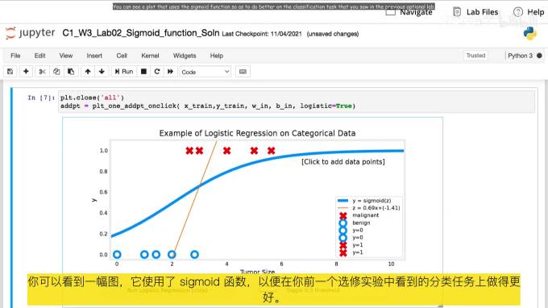
08:45记住，代码会提供给你们，你们只需运行即可。
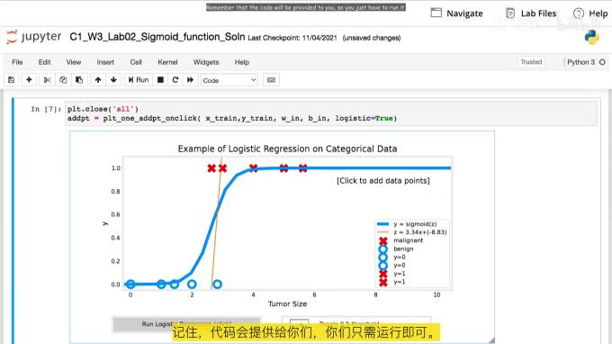
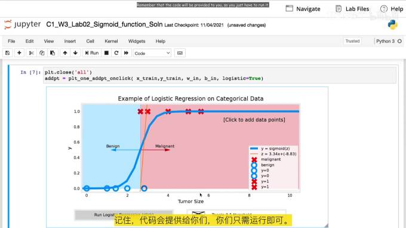
08:50我希望你们去看看，熟悉一下代码。
08:56你现在知道了什么是逻辑回归模型，以及定义逻辑回归的数学公式。
09:06在很长一段时间里，大量的互联网广告实际上就是由逻辑回归的一个稍微变体所驱动的。
09:14这对一些大公司来说非常有利可图，而这基本上就是那个决定在你和许多其他人浏览一些大型网站时展示什么广告的算法。
09:27现在，关于这个算法还有更多要学习。
09:30在下个视频中，我们将看看逻辑回归的细节。
09:35我们会看一些可视化，还会探讨一个叫做“决策边界”的东西。
09:42这将给你几种不同的方法，去将模型输出的比如零点三、零点七或零点六五这样的数字，映射到实际上是零还是一的预测上。
09:56那么，让我们进入下一个视频，去学习更多关于逻辑回归的知识。